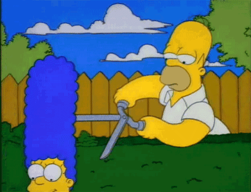

IRON MAN

Anthony « Tony » Stark, alias Iron Man (litt. « l'Homme de fer »)
est un super-héros évoluant dans l'univers Marvel de la maison d'édition Marvel Comics.
Créé par le scénariste Stan Lee, développé par Larry Lieber et conçu par les dessinateurs
Don Heck et Jack Kirby, le personnage de fiction apparaît pour
la première fois dans le comic book Tales of Suspense (vol. 1) #39 en mars 1963,
scénarisé par Larry Lieber et dessiné par Don Heck.
À partir de 1968, le personnage a son propre comic, The Invincible Iron Man,
publié par Marvel jusqu'en 1996 avec le no 332.
Au début de sa carrière de super-héros, Tony Stark avait pour principale occupation
de lutter contre les communistes dans le contexte de la guerre
froide, de manière beaucoup plus systématique que les autres personnages de Marvel Comics.
Ce cadre historique a progressivement disparu, au profit d'aventures
de science-fiction. Le contexte de la série Iron Man a ensuite continué d'évoluer avec les années,
le personnage affrontant en majorité des menaces de type technologique.
HOMER ET MARGE SIMPSON

Homer Jay Simpson est le principal personnage fictif de la série télévisée d'animation
Les Simpson et le père de la famille du même nom. Il est doublé par Dan Castellaneta dans
la version originale, Philippe Peythieu dans la version française et Hubert Gagnon dans la version québécoise.
Homer est apparu pour la première fois à la télévision avec le reste de la famille dans le court métrage Good Night,
le 19 avril 1987. Homer a été créé par le dessinateur Matt Groening alors qu'il attendait dans l'entrée du bureau de
James L. Brooks. On avait fait appel à Groening pour lancer une série de courts métrages basée sur Life in Hell,
mais celui-ci a décidé de créer un nouvel ensemble de personnages. Il a nommé Homer Simpson d'après son père,
Homer Groening. Après avoir fait l'objet de courts métrages durant trois ans, la famille Simpson a eu droit
à sa propre série sur le réseau Fox dès le 17 décembre 1989.
Homer est le père de la famille Simpson. Avec sa femme, Marge, ils ont trois enfants : Bart (10 ans),
Lisa (8 ans) et Maggie (2 ans). Dans l'épisode Naître ou ne pas naître (saison 24, épisode 3) on apprend que,
jeune, pour avoir de l'argent, il a fait plusieurs dons à la banque de sperme de Shelbyville.
Il en aurait fait assez pour se payer une Corvette, on voit d'ailleurs un tableau rempli de photos
de « minis-Homer » : blancs, noirs, filles, garçons… et même septuplés. Il travaille à la centrale
nucléaire de Springfield et incarne le stéréotype américain de la classe ouvrière ; il est vulgaire,
alcoolique, en surpoids, incompétent, maladroit, paresseux, ignorant mais est cependant dévoué à sa famille.
En dépit de la routine de sa vie d'ouvrier de banlieue, il a eu un grand nombre d'aventures extraordinaires.
ANONYMOUS

Anonymous (en français : les « Anonymes ») est un mouvement hacktiviste, se manifestant notamment sur Internet.
Le nom de ce collectif est considéré comme un mot fourre-tout désignant des membres de certaines communautés
d'internautes agissant de manière anonyme dans un but particulier (souvent pour défendre la liberté d'expression)[2],[3].
Les actions informatiques et physiques attribuées à Anonymous sont entreprises par des activistes non identifiés.
Lors des manifestations physiques du collectif, les membres sont généralement masqués[4]. Ils se présentent comme
des défenseurs du droit à la liberté d'expression sur Internet et en dehors.
Bien que ce mème ne soit pas lié à une entité spécifique, plusieurs sites Internet y sont fortement associés,
notamment des systèmes de bulletins électroniques tels que 4chan et Futaba, leurs wikis respectifs, Encyclopedia
Dramatica ainsi que certains forums[5].
Après une série de manifestations controversées, hautement publiées et d'attaques informatiques par Anonymous en 2008,
les incidents liés à ce groupe ont fortement augmenté[6]. En considération de ces capacités, Anonymous a été présenté
par la chaîne télévisée américaine CNN comme étant l'un des trois principaux successeurs de WikiLeaks[7].